EVOLUCIÓN DE LA PROGRAMACIÓN
-
LA PASCALINA
El francés Blaise Pascal al ver que su padre tenía problemas para llevar una correcta cuenta de los impuestos que cobraba, inventa una máquina calculadora que trabajaba con engranajes.
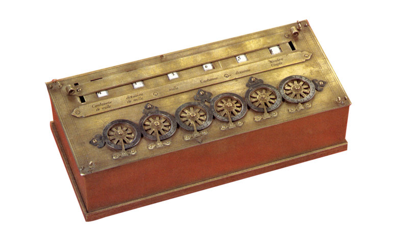 1642 -
MÁQUINA DE TELAR
Jhoseph Marie-Jacquard se dió cuenta que puede reproducir automaticamente patrones de tejidos, leyendo la información codificada en patrones de agujeros perforados en tarjetas de papel rígido.
 1801
1801
-
MÁQUINA DIFERENCIAL
El Inglés Charles Babbage creo una máquina diferencial capáz de desarrollar polinomios pero por ciertas circunstancias la máquina fracasó.
 1822
1822
-
MÁQUINA ANALÍTICA
Después del fracaso de su antigua máquina, Babbage crea la Máquina Analítica la cual era capaz de hacer TODAS las operaciones matemáticas y ser programada por medio de tarjetas de cartón perforado y guardar una enorme cantidad de cifras, es por esto que a Babbage se le considera el "PADRE DE LA COMPUTACIÓN".
 1833
1833
-
MÁQUINA TABULADORA ELÉCTRICA
Horman Hollerith crea su máquina la cual lograba registrar datos en tarjetas perforadas, gracias a este invento se lograban tabular de 50 a 75 tarjetas por minuto.
 1889
1889
-
ENIGMA
Arthur Scherbius crea la máquina alemana "ENIGMA" la cual permitía usarse tanto como para cifrar como para descifrar mesnajes.
 1920
1920
-
MÁQUINA DE TURING
Alan Turing crea su máquina, mecanismo retórico que manipula símbolos en una cinta puede ser adaptada para simular la lógica de cualquier algoritmo de computación y es especialmente útil en explicar las funciones de la CPU dentro de un ordenador.
 1936
1936
-
Z1
Conrad Zuse fabricó y diseñó su máquina, la que para muchos es la primera computadora programable de la historia, esta era una calculadora mecánica binaria operada con electricidad, los datos los recibía de cintas perforadas.
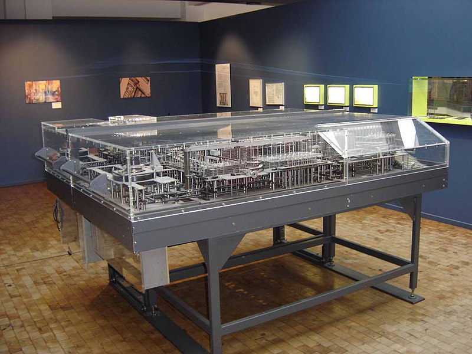 1936-1938 -
BOMBE
Marian Rejewski en 1938 diseña BONDE, y hasta el año siguiente junto a "ALAN TURING GORDON WELCHMAN Y HAROLD KEEN" la fabrican, es un dispositivo electromecánico usado por los criptólogos británicos para ayudar a descifrar las señales cifradas por la máquina "ENIGMA" durante la 2da Guerra Mundial.
 1938
1938
-
ENIAC
"ELECTRONIC NUMERICAL INTEGRATOR AND COMPUTER" es creado por "JOHN PRESPER Y JOHN WILLIAM" con el propósito de resolver los problemas de analística del ejército de U.S.A.
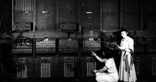 1943 -
ASSEMBLER
En este año la promación em máquina resulta ser muy lenta y tediosa puesto que los datos de instrucción se debe introducir en lenguage binario y además obliga a conocer las posiciones de memoria donde se almacenan los datos por lo cual se crea "CÓDIGO DE ENSAMBLAJE" que utiliza una serie de abreviaturas para representar las operaciones.
 1950
1950
-
COMPILADOR A0
Grace Hopper inventa el primer compilador A0 permitiendo generar un programa binario a partir de un código fuente.
 1951
1951
-
SPEEDCODING
John Backus crea el primer lenguage de alto nivel "SPEEDCODING" para el IBM 701.
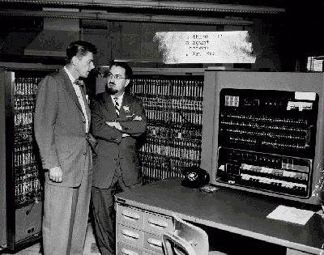 1953 -
THE FORTRAN
IBM desarrolla FORTRAN el primer lenguage de programación universal especificamente se crea para desarrollar computaciones científicas, matemáticas y estadísticas de alto nivel es el lenguage mas antiguo en uso.
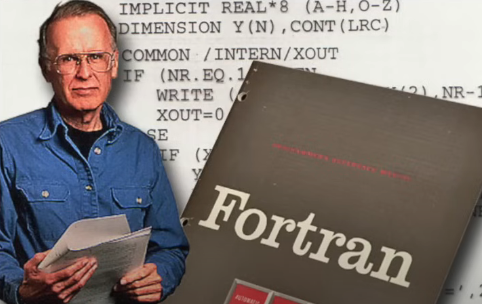 1957 -
ALGOL 58
Se crea Algoritmic Language, el primer lenguage algorítmico fue popular entre los años 60 pero no fué usado comercialmente.
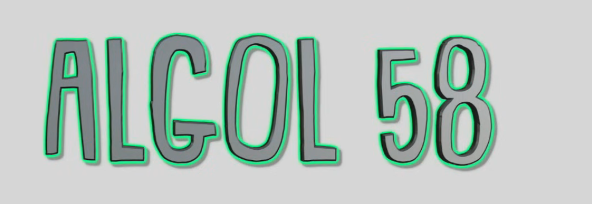 1958 -
LISP
John McCarthy crea LISP como parte de un proyecto de IA del "MIT" y sería la base de la programación orientada a objetos teniendo como soporte un equipo IBM 704.
1958 -
COBOL
Se crea el segundo gran lenguage de programación universal, fué desarrollado bajo la supervisión de Grace Hopper, este lenguage actualmente se utiliza en grandes sistemas informáticos, sistemas bancarios mas que todo.
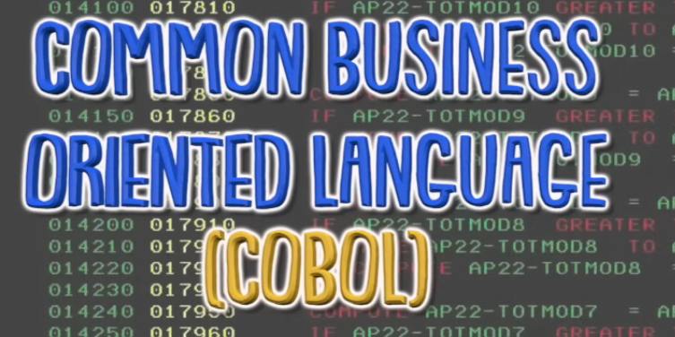 1959-1960 -
SIMULA
Ole Johan y Kristen Nygaard crean este lenguaje de programación orientado a objetos varios años después de su desarrollo otros lenguages comenzaron a usar sus principios de orientación a objeto.
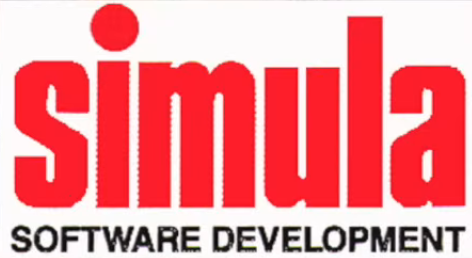 1962 -
BASIC
John Kemeny y Thomas Kurtz diseñaron un nuevo lenguaje que permitiera introducirse a sus estudiantes en los sistemas de tiempo compartido.
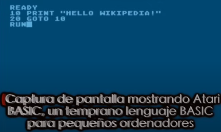 1964 -
ASCII
Fué creado por "ANSI" como una refundación de los conjuntos de códigos utilizados entonces en telegrafía, el código ASCII utiliza 7 bits para representar los caracteres.
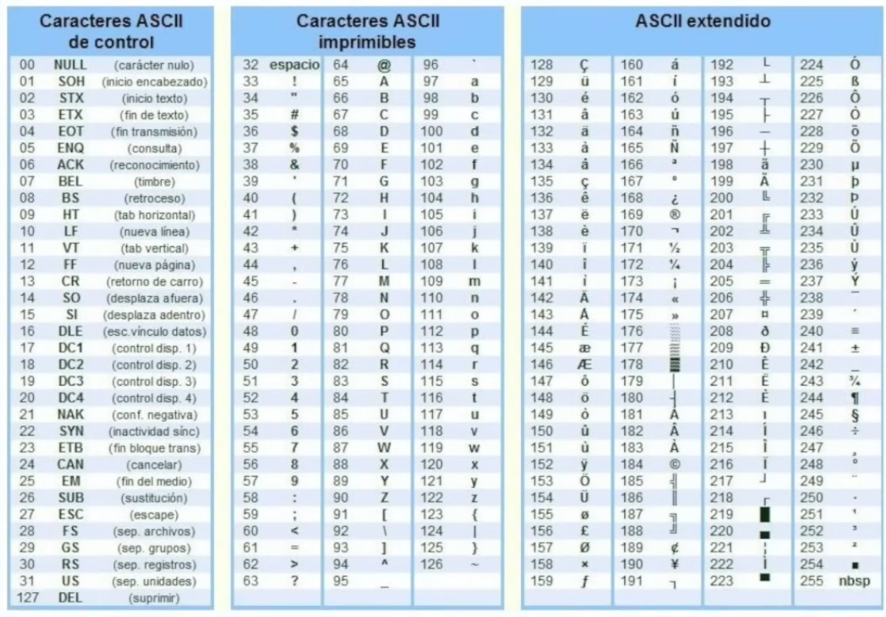 1967 -
B
Kenneth Thompson y Dennis Ritchie crean "B", lenguaje de programación pensado para UNIX que sería precesor de lenguaje C.
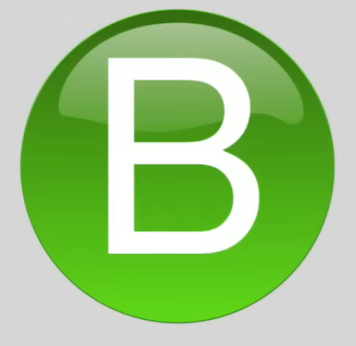 1969 -
PASCAL
Niklaus Wirth crea PASCAL nombrado en memoria a Blaise Pascal, fué una herramienta de enseñanza y esta se popularizó por su uso comercial se caracteriza por ser fuertemente tipado.
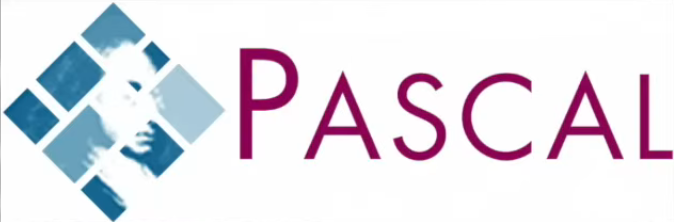 1970 -
C
Dennis Ritchie crea como evolución de "B", "C" es un lenguage orientado a la implementación de sistemas operativos, concretamente UNIX, es el lenguaje más popular para crear SOFTWARE de SISTEMA aunque también se utiliza para crear aplicaciones.
1972 -
PROLOG
Es el prototipo de lenguaje en declarativo por excelencia.
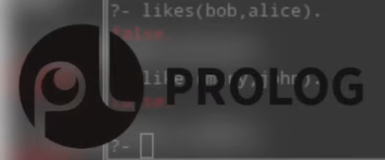 1972 -
ADA
Es derivado del PASCAL, es un lenguaje de programación orientado a objetos y fuertemente tipado de forma estática que fué diseñado por Jean Ichbiah.
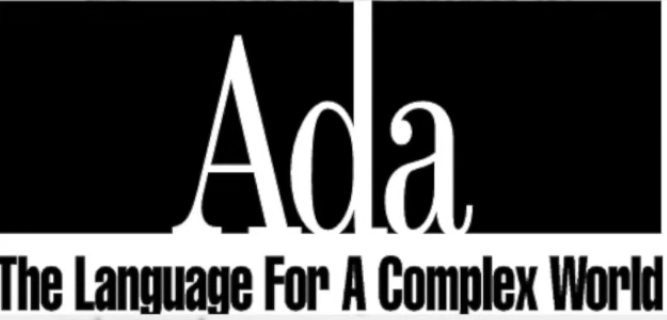 1980 -
C++
Bjarne Stroustrup modificó el lenguaje de C a C++, es una extensión de "C" con mejoras tales como clases, funciones virtuales y plantillas hoy en día es usado por FIREFOX, OFFICE Y ADOBE PDF WRITER".
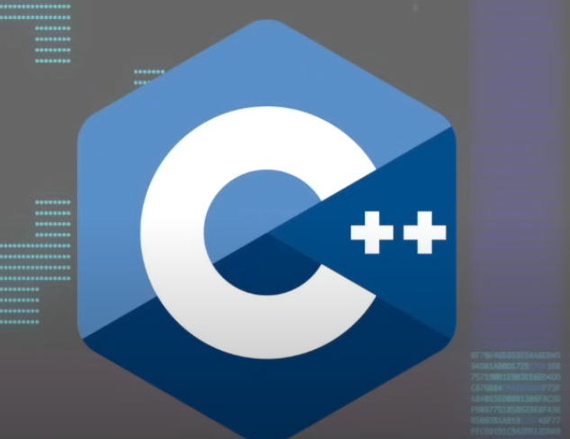 1983 -
PERL
Larry Wall creó PERL después de intentar extraer datos de un informe y darse cuenta que UNIX no podía llevar a cabo las operaciones que él necesitaba, tiene características de "C".
1987 -
PYTHON
Guido Van Rossum crea PYTHON es un lenguaje de programación interpretado e impercativo capaz de ejecutarse en una gran cantidad de plataformas sus principales usos son en apps web, desarrollo de SOFTWARE y ciberseguridad.
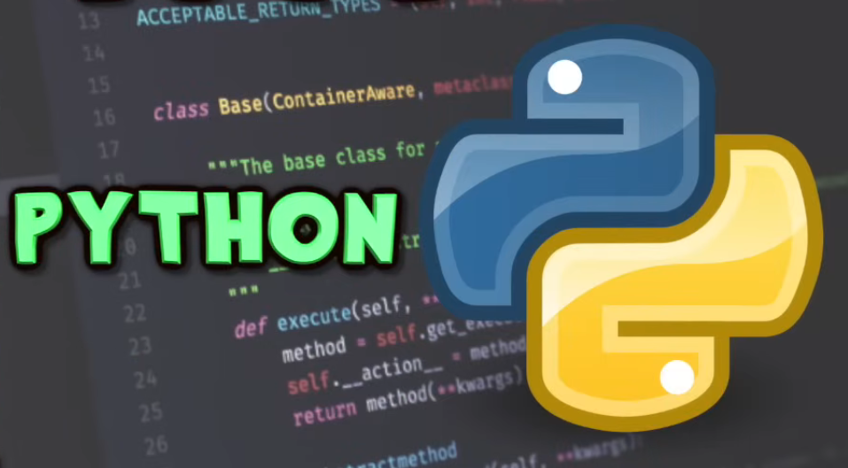 1991 -
VISUAL BASIC
Alan Cooper desarrolla VISUAL BASIC especificamente para MICROSOFT, lenguaje de programación dirigido por eventos, este lenguage es un dialécto de BASIC.
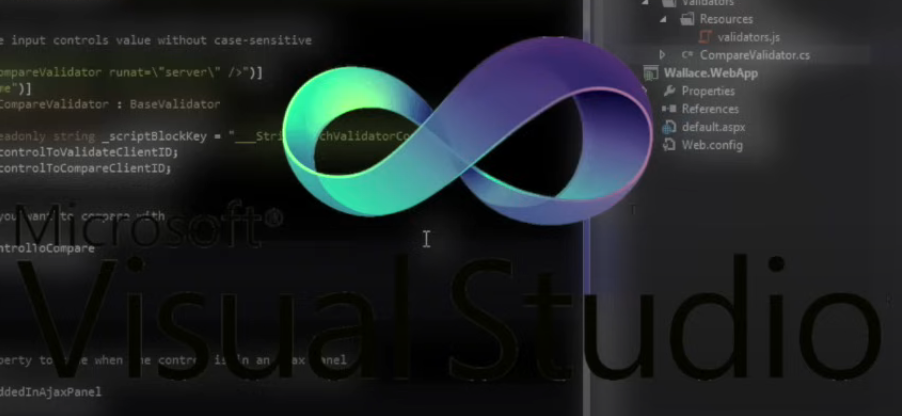 1991 -
RUBY
Yukihiro Matsumoto desarrolla RUBY fucionando aspectos de sus lenguajes favoritos es un lenguaje de programación dinámico y de código abierto enfocado en la simplicidad y productividad.
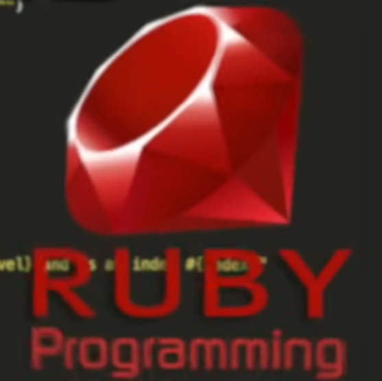 1993 -
PHP
Rasmus Lerdorf desarrolla PHP para reemplazar unos scripts de PERL utilizados para mantener su web personal.
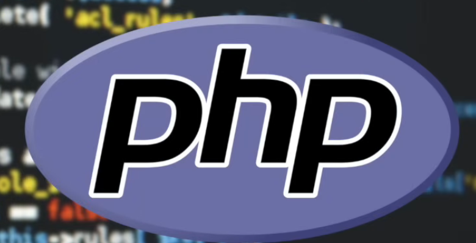 1995 -
JAVA
Un equipo de desarrollo de Sun Mycrosistems, dirigido por James Gosling, crearon JAVA para agregar un botones a un sistema de televisión interactiva.
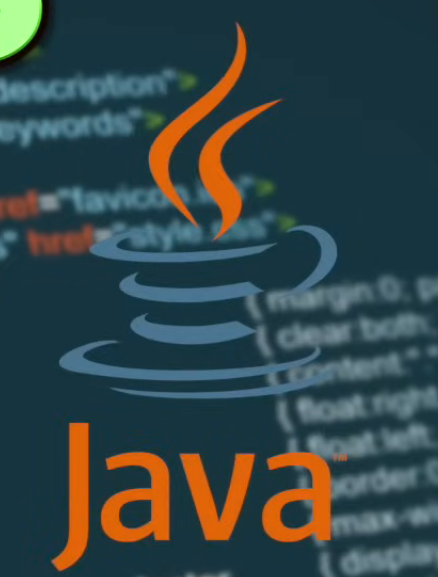 1995 -
JAVA SCRIPT
Fué originalmente desarrolado por Brendan Eich diseñado con influencia del lenguaje "C", lenguaje de alto nivel creado para extender las funcionalidades de las paginas web, usados por las paginas dinámicas para el envío y validación de formularios, interactividad, animaciones, seguimientos y actividades de usuario etc.
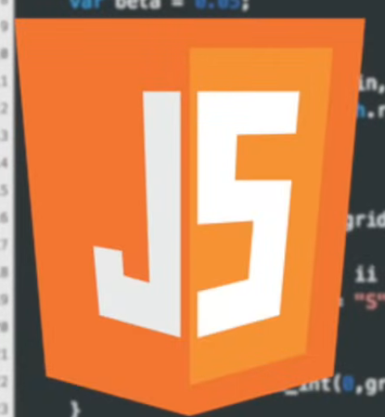 1995